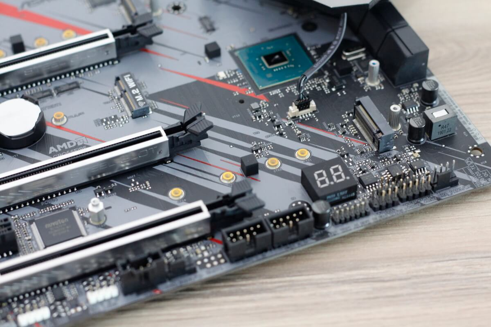

1.เช็คสัญญาณหน้าจอมอนิเตอร์: บางครั้งอาจจะเปิดเครื่องติดแล้ว แต่มอนิเตอร์เช็ค Source ผิด จากเดิมที่ใช้ HDMI แล้วอาจเคยโดนเปลี่ยนไปเป็น DisplayPort ตัวจอไม่ได้มีระบบ Detect อัตโนมัติ สัญญาณก็จะไม่สามารถแสดงภาพได้
การแก้ไข: เข้าไปปรับใน OSD ของมอนิอเตอร์ให้ช่องสัญญาณตรงกับที่มาจากการ์ดจอ เช่น HDMI to HDMI เป็นต้น
2.สายสัญญาณเสียหาย: สาเหตุนี้ก็มีโอกาสเจอกันได้บ่อย โดยเฉพาะกับสายสัญญาณดิจิตอล เช่น HDMI หรือ DisplayPort ซึ่งอาจเสียหายจากขั้วต่อพอร์ตพังหรือสายหักจากการแรงบิด กระแทกหรือแรงกระชากเป็นต้น
การแก้ไข: เช็คในเบื้องต้นด้วยการต่อกับจออื่นๆ อาจจะเป็นจอทีวีที่เป็น HDMI ด้วยกัน แต่ถ้าเป็นพอร์ตอื่นๆ ก็อาจจะต้องมองหาจอบ้านเพื่อนลองดูว่าสามารถใช้งานได้หรือไม่? ถ้าอาการดูแล้วว่าเกิดจากสายสัญญาณเสียหาย ก็ซื้อใหม่มาทดแทน
3.ปัญหาจากการ์ดจอ: ก็มีความเป็นไปได้สูง แต่จะหนักเบา ก็ขึ้นอยู่กับอาการที่เกิด ซึ่งมีได้หลายสาเหตุ เช่น ระดับเบาๆ ก็อาจจะเป็นที่พอร์ตการ์ดจอเสียในบางพอร์ต เพราะบางคนถอดเปลี่ยนพอร์ตบ่อย ก็อาจมีปัญหาที่พอร์ตได้ หรือถ้าหนักขึ้นมาหน่อย อาจเกิดจากการ์ดจอเสียได้ เนื่องจากใช้งานมานานหรือเกิดจากมีแมลง สัตว์เลื้อยคลานหรือฝุ่นเข้าไปทำให้ จนเกิดการลัดวงจร ของเหลวจากสัตว์ อาทิ ฉี่หนู หรือมูลสัตว์ ก็เป็นอัตรายได้ กรณีนี้ ถ้าโชคดี ทำความสะอาดก็พอช่วยได้ แต่ในเคสที่แย่มาก ก็น่าจะต้องบอกลา
การแก้ไข: การ์ดจอบอบบางไม่แพ้อุปกรณ์อื่นๆ ที่อยู่ภายในเครื่องอื่นๆ หากเมนบอร์ดคุณมีพอร์ต PCI-Express มากกว่า 1 สล็อต ก็อาจสลับสล็อตลองดูว่าใช้งานได้หรือไม่ ต่อมาก็คือ ลองทำความสะอาดหน้าสัมผัสพินของการ์ดจอด้วยยางลบ ปัดฝุ่นและล้างคราบสกปรกให้สะอาด ด้วยน้ำยา Cleaner สำหรับอุปกรณ์อิเล็กทรอนิกส์ ถ้าอาการไม่มากก็จะกลับมาใช้งานได้ แต่ถ้าเป็นหนัก ก็คงต้องเคลมหรือซื้อใหม่
4.แรมมีปัญหา: ก็มีทางเป็นไปได้ ซึ่งทำให้ระบบบูตเปิดเครื่อง แล้วจอดำ ตรงจุดนี้ในปัจจุบันค่อนข้างจะบอกยาก เพราะต้องเช็คด้วยตัวเองจากสัญญาณบนเมนบอร์ด ซึ่งบางรุ่นจะมาพร้อม LED Debug ให้สังเกตตัวเลขได้ บางรุ่นมีไฟ LED ใช้ในการแจ้งปัญหา แต่ทั้งหมดนี้ ก็ต้องอิงจากข้อมูลประกอบบนคู่มือเป็นหลัก ใครทำข้อมูลหาย ก็ต้องไปดาวน์โหลดบนเว็บไซต์ผู้ผลิต
การแก้ไข: ในเบื้องต้น ให้ใช้วิธีสลับสล็อตแรม ไปทีละแถว จนกว่าจะทราบว่าสล็อตแรมแถวใด หรือแรมแถวใดเสีย และควรทำความสะอาดแรมร่วมกันไปด้วย วิธีง่ายๆ ก็คือ ยางลบถูที่พินหน้าสัมผัสของแรมทั้ง 2 ด้านให้สะอาด หรือใช้น้ำยาทำความสะอาดอุปกรณ์อิเล็กทรอนิกส์ แล้วจึงนำมาเช็คในแต่ละสล็อตอีกครั้งหนึ่ง

5.ปัญหาจากเมนบอร์ด: ในกรณีนี้อาจเกิดจากเมนบอร์ดพังหรือซีพียูไม่ทำงาน ซึ่งเกิดจากความเสียหายจากไฟตก ไฟกระชากหรือแมลงสัตว์ที่เข้าไป เช่น หนู แมลง มด รวมถึงความชื้นที่ส่งผลเสียต่ออุปกรณ์อิเล็กทรอนิกส์
การแก้ปัญหา: ให้ลอง Clear CMOS หรือที่เรียกว่า เคลียร์ไบออส บนเมนบอร์ด วิธีการก็มีอยู่มากมาย สามารถเข้าไปดูวิธีการได้จากในเว็บ NotebookSPEC ได้เลย แต่ถ้าเคลียร์แล้ว ยังใช้ไม่ได้ ให้ลองปัดฝุ่น ด้วยการถอดเมนบอร์ดออกมาทำความสะอาดเสียก่อน โดยใช้แปรงขนอ่อนปัดเบาๆ ไปมา หรือถ้ามีโบวเวอร์เป่า ก็ทำได้ แต่ใช้แรงลมที่ไม่มากนัก ป้องกันความเสียหายของชิ้นส่วนบางชิ้น แต่ถ้าฮาร์ดคอร์หน่อย ก็อาจจะล้างทำความสะอาด (ในกรณีที่หมดประกันแล้ว)
6.ปัญหาจากการจ่ายไฟของ PSU: อันนี้น่าจะเป็นปัญหาหนักพอๆ กับการ์ดจอหรือเมนบอร์เสีย เพราะหาทางเช็คได้ยากมาก ส่วนใหญ่ก็ต้องถึงมือช่าง เนื่องจากผู้ใช้ส่วนใหญ่ ไม่มีเพาเวอร์ซัพพลายสำรองไว้นั่นเอง
การแก้ปัญหา: เดิมทีเพาเวอร์ซัพพลายดีๆ ไม่เสียได้ง่ายๆ ยกเว้นจะมีเหตุหนักหนาจริง เช่น ไฟลัดวงจรทั้งบ้านหรือไฟกระชากจากเสาไฟล้มหรืออื่นๆ อาจจะตรวจเช็คจากการถอดสายเพาเวอร์ 24-pins และ 8-pins ออกมา แล้วเสียบกลับเข้าไปใหม่ ลองดูว่าใช้ได้หรือไม่ ซึ่งถ้าไม่ได้ก็คงต้องเปลี่ยน หรือนำไปซ่อม แต่แอดแนะนำว่าซื้อใหม่น่าจะดีกว่า ปัจจุบัน 550W 80+ ราคาเริ่มต้นพันนิดๆ เอง
|